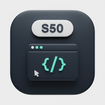

S50info
Windows
CLI para consultar, exportar y automatizar datos de Sage 50 desde la línea de comandos.
v2.2.492 MB · 2 nov 2026
Descarga directa (ZIP) próximamente · solicitar por correo
Información del archivo
SHA-256
89269624c45acc448a35640934dffd69ee7970a62eb2ae1d397d19d5948d82e4Microsoft Store ↗
winget install --id 9N8P7XNX68X3 -s msstore